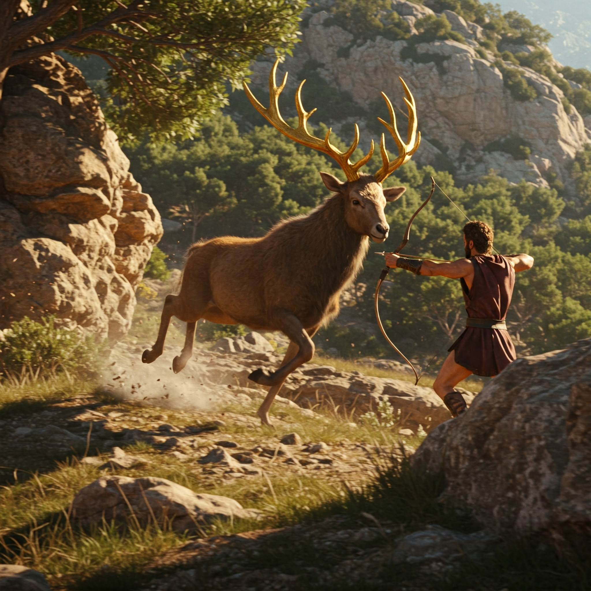

El aire espeso del pantano te envuelve al acercarte a las aguas negras de Lerna. Una niebla venenosa se arrastra sobre la superficie, ocultando peligros que ningún mortal ha logrado conquistar. Aquí, en las profundidades de este lugar maldito, la Hidra aguarda.
«Cuidado, hijo de Zeus», susurra una voz a tus espaldas. Te vuelves, pero solo ves el reflejo de tu propia figura en el agua estancada. ¿Fue tu imaginación... o el eco de una advertencia divina?
De pronto, el agua hierve. Nueve cabezas serpentinas emergen de las sombras, sus ojos brillando como dagas en la oscuridad. La más grande de todas te mira fijamente, su boca goteando un veneno que disuelve hasta el acero. Sabes la leyenda: por cada cabeza que cortes, dos crecerán en su lugar.
¿Cómo enfrentarás este desafío?
